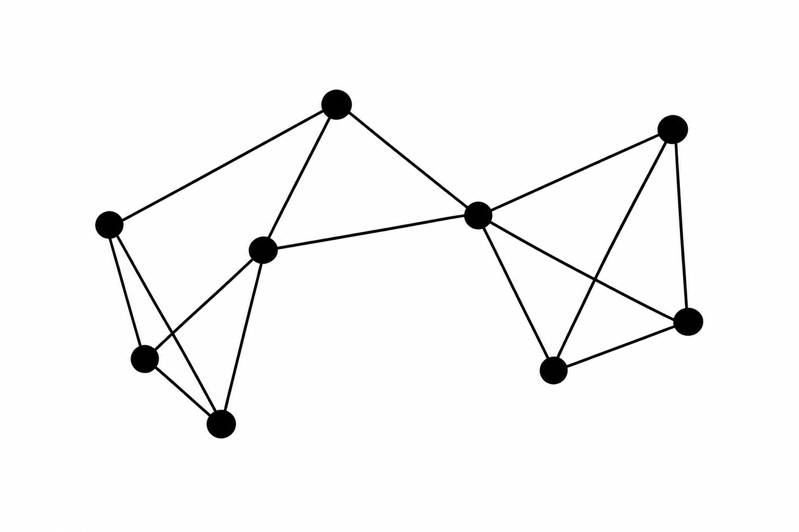
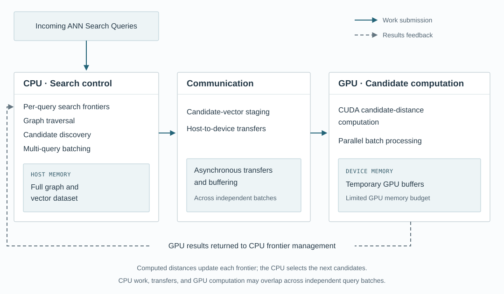

Carnegie Mellon University · 15-618 · Fall 2026
Heterogeneous CPU–GPU Graph-Based Vector Search with Memory-Aware Execution
Exploring how irregular graph-search workloads can be executed efficiently across CPUs and GPUs under limited GPU memory.
Read Project ProposalProject Overview
We plan to build a hybrid CPU–GPU engine for graph-based Approximate Nearest-Neighbor (ANN) search, focusing on datasets that cannot fit entirely in GPU memory. We will investigate how parallel query processing, efficient CPU–GPU communication, batching, and overlapping computation with data transfers can improve search performance. Our implementation will use C++ multithreading and SIMD on the CPU, along with CUDA for parallel computation on the GPU.

Source: CMU 15-445/645 lecture slides.
Why Is This Challenging?
Vector similarity search is used to find items with similar numerical representations, such as related images, documents, or products. Searching every vector is easy to parallelize, but it can become expensive for large datasets.
Graph-based approximate nearest-neighbor search avoids examining every vector by exploring a graph of related vectors. However, this introduces dependencies: the next vertices to explore depend on the results of earlier steps.
This creates several challenges when combining CPUs and GPUs.
Irregular Graph Traversal
Different queries follow different paths through the graph and generate varying amounts of work. The next candidates are discovered dynamically, making it difficult to maintain efficient parallel execution.
CPU–GPU Communication
Candidate vectors and search results must move between CPU and GPU memory. For small candidate sets, communication and kernel-launch overhead can outweigh the benefit of GPU computation.
Limited GPU Memory
Large vector datasets may not fit entirely in device memory. The engine must fetch or stage candidate data from host memory while operating within a limited GPU-memory budget.
Synchronization and Pipelining
Graph traversal contains dependencies, but different queries can make progress independently. Coordinating CPU work, data transfers, and GPU computation may help reduce idle time.
Proposed System Architecture
Our initial design keeps the complete graph and vector dataset in CPU memory. The CPU maintains the search frontier for each query and discovers the next candidate vertices. Candidates from multiple queries are combined into batches, transferred to the GPU, and processed using CUDA kernels. The GPU returns the computed distances, allowing the CPU to update the search frontiers and continue traversal. We will progressively optimize this execution pipeline through batching, memory-limited staging, and asynchronous communication.

- Candidate Discovery: CPU workers expand graph vertices and identify candidate neighbors for each query.
- Batch Formation: Candidates from multiple queries are grouped into GPU work batches.
- GPU Processing: CUDA kernels calculate distances for candidate vectors in parallel.
- Frontier Update: Results return to the CPU, where each query's search state is updated.
- Pipelined Execution: Independent query batches allow CPU work, data transfers, and GPU computation to overlap.
Execution Strategies
We will implement and compare four execution strategies to understand how batching and asynchronous execution affect performance.
CPU-only Search
Graph traversal and candidate-distance calculations are performed on the CPU. This serves as the reference implementation and performance baseline.
Basic Hybrid Search
The CPU controls traversal, while the GPU computes candidate distances. Transfers and execution are synchronized, providing a baseline for identifying communication overhead.
Batched Hybrid Search
Candidates from multiple queries are grouped into larger GPU workloads. This aims to improve GPU utilization and reduce the overhead of many small kernel launches.
Pipelined Hybrid Search
Asynchronous transfers and multiple buffers are used to overlap CPU graph traversal, communication, and GPU computation across independent query batches.
Project Goals
Planned Deliverables
- A correct multithreaded CPU graph-search implementation.
- A basic hybrid CPU–GPU graph-search engine.
- Batched GPU candidate-distance processing.
- Memory-limited GPU data staging.
- Pipelined CPU–GPU execution using asynchronous operations.
- Performance comparisons across execution strategies, workload sizes, and GPU-memory budgets.
Stretch Goals
- GPU-resident vector caching to reduce repeated transfers.
- Moving selected graph-search operations onto the GPU.
- Adaptive CPU–GPU scheduling based on workload size, transfer overhead, and device availability.
Experimental Evaluation
We will compare CPU-only, synchronized hybrid, batched hybrid, and pipelined hybrid implementations using graph-based ANN workloads. Our experiments will vary query concurrency, search parameters, dataset size, and GPU-memory budgets. We will evaluate performance at comparable search recall so that improvements are not simply caused by performing less search work.
| Metric | What It Measures |
|---|---|
| Queries per second | Overall search throughput |
| Average and tail latency | Time required to complete queries |
| Recall@k | Accuracy of approximate nearest-neighbor results |
| CPU–GPU transfer overhead | Time and volume of data movement |
| GPU utilization | Effectiveness of parallel GPU execution |
| Execution-time breakdown | Computation, communication, and synchronization costs |
Timeline
| Dates | Milestone |
|---|---|
| November 6–9, 2026 | Finalize architecture, dataset, graph format, and proposal |
| November 10–16, 2026 | CPU graph-search baseline and initial CUDA kernel |
| November 17–23, 2026 | Hybrid integration, batching, and milestone report |
| November 24–30, 2026 | GPU-memory staging and asynchronous execution |
| December 1–7, 2026 | Profiling, optimization, and experiments |
| December 8–10, 2026 | Final report and performance analysis |
| December 11, 2026 | Project poster presentation |
Project Deliverables
- Project Proposal
- Read Proposal
- Milestone Report
- Due
- Upcoming
- Final Report
- Due
- Upcoming
- Project Poster
- Upcoming
- Source Code
- Will be linked when the project repository is ready for publication.
Team
R Yeeshu Dhurandhar
Andrew ID: rdhurand
Carnegie Mellon University
Christian Yu
Andrew ID: cjyu
Carnegie Mellon University